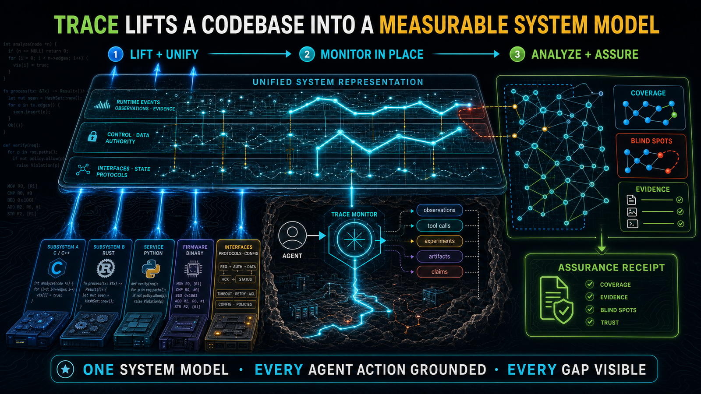

ERIS solutions · DARPA ERIS · Listing 7-26-3487
Software Understanding Assurance for Autonomous Cyber Analysts

Autonomous cyber analysts are already at work. Here that means AI systems that inspect software on their own, use tools, and return a cyber judgment. They hunt vulnerabilities, triage malware, and reverse unknown binaries in real workflows. The open question is how much to trust what they report.
These analysts are graded on task success. When one reports "no findings," we cannot tell whether it understood the software or never examined it. That matters because exploits hide in the abstractions and cross-boundary relationships an analyst does not recover. Dynamic analysis has coverage metrics. Autonomous cyber analysts have no measure of what they examined.
TRACE measures how much software understanding an autonomous cyber analyst achieves, and records the result in an assurance receipt. The pipeline keeps evolving as it runs:

The receipt reports coverage, evidence, blind spots, capability, applicability, and trust. It says what the analyst demonstrated, what remains unknown, and where risk persists. It also says which analyst to use on which target, with what tools or support, and when that analyst is qualified to act. No current benchmark or standard measures coverage of understanding. Benchmarks score task success, and standards govern behavior.
These items are planned, not built:
Defense: qualifying autonomous cyber-reasoning systems, such as AIxCC-class agents, before fielding them. Measuring human analysts and agents side by side in cyber ranges to support human-machine teaming. Using TRACE's blind-spot findings to build better analysts. Commercial: AI code-audit and vulnerability-analysis vendors can attach a TRACE receipt to their output, so customers see what was covered and what was missed.
TRACE shares its differential idea with Serenitix's VeriFlow work on authority regressions; see the SURE '26 paper.
How to engage. Our solution has been competitively assessed by the Defense Advanced Research Projects Agency (DARPA) and has been deemed “awardable” in the Expedited Research Innovation System (ERIS) Marketplace, making it available to view and easily procurable by the Department of War. Government users can find it by searching for the exact title, "TRACE — Software Understanding Assurance for Autonomous Cyber Analysts", in the ERIS Marketplace at darpaconnect.us/eris (listing 7-26-3487). To discuss the listing, contact Serenitix.